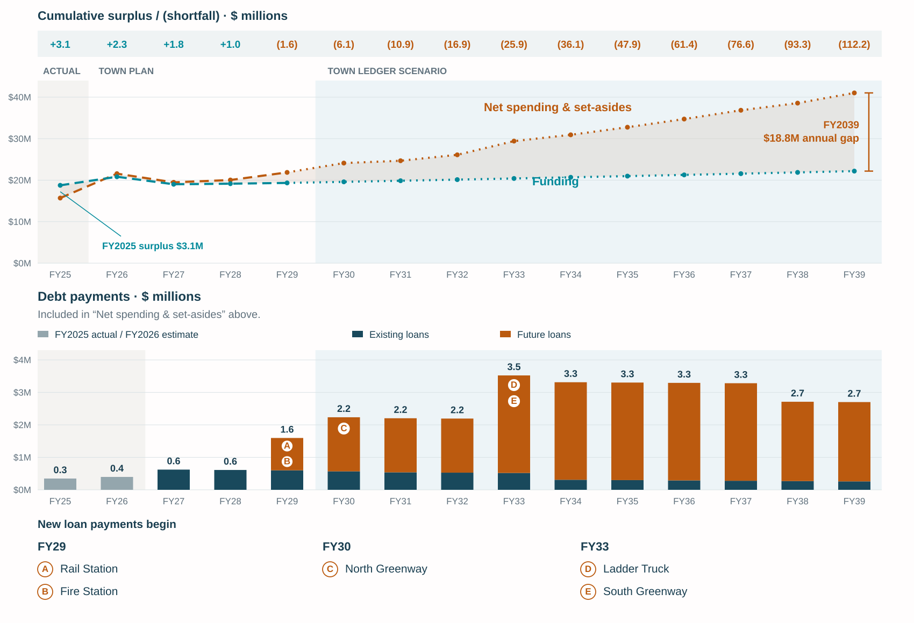

HILLSBOROUGH, NORTH CAROLINA / THE BIG PICTURE
Your outlook. Then your choices.
The Big Picture
Your bill. The Town’s gap.
CURRENT MODEL · FY2027
$2,052annual Town property taxPOSSIBLE · FY2039
$5,778if property tax fills the gapThis scenario assumes your share of Town tax collections stays fixed and property taxes cover the entire annual gap. It is not an adopted bill. County taxes and utility charges are separate.
See the calculation and assumptions
The current calculator uses $0.513 per $100 of taxable value. The future model uses the home’s share of FY2026 estimated Town property-tax receipts; that share stays fixed. It is a collections proxy, not a certified share of the tax base.
GENERAL FUND · CONDITIONAL OUTLOOK
Revenue is essentially flat while spending more than doubles.
FY2025 actuals → conditional FY2039 scenario. This is not an adopted budget.
The gap grows if costs outpace revenue.
Full outlook & debt detail ↗Showing later years. Swipe or scroll left for the earlier years.

01 / WHO SHARES THE TOWN TAX BASE?
A Hillsborough address is a much bigger circle.
of the assessment records in this broader comparison have Town property tax billed.
4,124 of 12,101 records. Town records plus outside-Town records with a Hillsborough address. Record count—not unique parcels, people, taxable value or collected taxes. Outside-Town properties still owe applicable County and other taxes.
See the boundaries, exemptions and downtown study ↗03 / What does it pay for?
Look at the spending path, as well as the projects.
Personnel and operations account for about 93% of added net spending after FY2029 in this illustration.
Net spending and set-asides; nominal dollars. Set-asides move money into project or reserve funds. The scenario extends past personnel and operating-cost growth; it is not a prediction.
No matched-period inflation benchmark is established in these sources. No inflation-adjusted growth claim is made here.
04 / Projects, capital & debt
Find out what can still change.
Start with these five General Fund projects. A planned cost is not proof of a signed contract—or of savings available from cancelling it.
| Project | Plan estimate | What the source establishes | Question before changing it |
|---|---|---|---|
| Rail station ↗ | $11.714M | Funding agreement reportedExecuted terms and contracted balance unverified. | Which obligations and repayment conditions limit the options? |
| Fire station ↗ | $10.000M | Contract status unverifiedFunds set aside; $1.05M current budget is not proof of spending. | What scope, timing and construction commitments are still open? |
| North Greenway ↗Ridgewalk — north | $6.958M | Contract status unverifiedFeasibility work and a Board priority decision reported. | Which later phases are approved, contracted or still discretionary? |
| South Greenway ↗Ridgewalk — south | $6.800M | Contract status unverifiedDesign in FY2030; construction in FY2032 in the plan. | Can timing or scope change, and at what service or cost tradeoff? |
| Ladder truck ↗ | $2.627M | Approval & contract unverifiedFY2032 spending plan; borrowing assumptions differ. | Confirm the order, financing and replacement needs first. |
Received FY2027–FY2033 capital plan; adoption and amendments unverified. Estimates are rounded here. These are project budgets, not one-year Town cash costs or amounts that can automatically be cut. Debt payments and cash contributions already appear in the outlook.
YOUR NEXT STEP
Choose one question.
Bring it into the conversation.
Use the evidence to frame a specific proposal: what should change, why, and what tradeoff would you accept?
Share one idea, concern or question. Read how responses are reviewed, then start with what matters most to you.
Find the Town’s participation channels ↗Check the Town’s current meeting notice and comment rules. No participation deadline is announced here.
Sources & assumptions
Reading this edition. Start with your editable Town property-tax bill and the projected gap, then explore ways to close it. The Big Picture is the overview; the full calculator, Outlook, detail pages and source documents remain available through the links.
- Outlook. Saved General Fund Big Picture, FY2027 recommended-budget basis: FY2025 actuals, Town estimates/plans through FY2029 and conditional FY2030–FY2039 model. Funding and spending are both net of utility reimbursements. The opening shows the gap panel of the existing graphic without changing its plotted values or geometry; the full debt chart remains in the Outlook detail. Charts use rounded millions. Read the full model and assumptions ↗
- Household. Existing current-bill calculation and fixed-share tax model, unchanged. The future result assumes property taxes cover the full FY2039 annual gap without additional use of savings. It excludes County tax and utilities. Full household comparison ↗
- Who Pays. 4,124 positive Town-tax-billed records ÷ 12,101 assessment records = 34.0798%, rounded to 34.1%. County snapshot August 4, 2026; coverage includes Town and outside-Town Hillsborough-address records. Records can repeat parcels. Definitions and coverage ↗
- Projects. Received capital plan and existing loan-project sources. Commitment and influence status are not inferred from a spending year or a current budget. Running costs, debt repayments and project budgets are distinct. Exact project amounts and sources ↗
- Inflation. No verified matched-period benchmark was found in this source set. The placeholder remains explicit.
Browse source records ↗ · Explanations & calculations ↗ · From your input to action ↗
“Current” refers to the FY2027 rates used in this analysis.
Stay informed.
Get new findings and important Town Ledger updates.